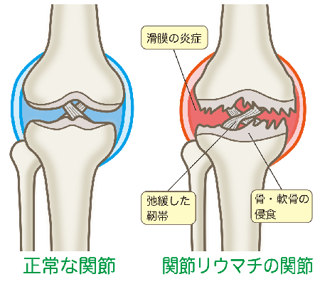
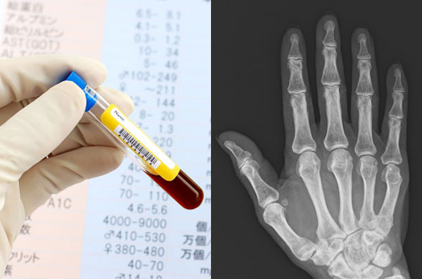
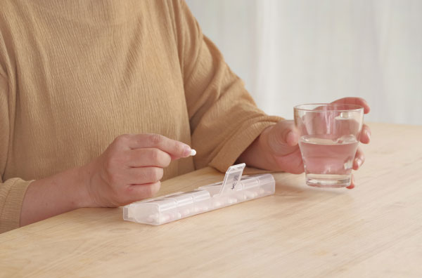
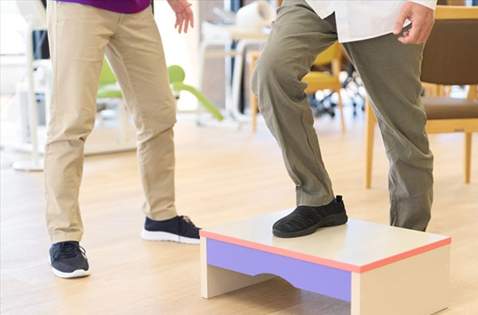

リウマチ内科
朝起きたときのこわばり、関節の痛みや腫れ。
「年齢のせいかな？」と思って放置してしまう方が多くいらっしゃいます。
しかし、関節リウマチは 早期診断・早期治療がとても重要な病気です。
適切な治療を行うことで、関節の破壊を防ぎ、これまで通りの生活を続けられる可能性が大きく高まります。
当院では、月曜日の午前だけではありますが、リウマチ専門医が診察にあたり、より専門的で質の高いリウマチ診療を提供しています。
リウマチ内科担当医
猪狩 雄蔵（リウマチ専門医）
【最終受付時間】初診の方・・・12：00 / 再診の方・・・12：30
※下記時間以外もリウマチ科の診療は受け付けております。
| 月 | 火 | 水 | 木 | 金 | 土 | 日 | 祝 | |
|---|---|---|---|---|---|---|---|---|
| 9:00~13:00 | 〇 | － | － | － | － | － | － | － |
| 14:30~17:30 | － | － | － | － | － | － | － | － |
| 9:00~13:00 | 14:30~17:30 | |
|---|---|---|
| 月 | 〇 | － |
| 火 | － | － |
| 水 | － | － |
| 木 | － | － |
| 金 | － | － |
| 土 | － | － |
| 日 | － | － |
| 祝 | － | － |
リウマチ科で診察する主な症状
- 朝のこわばりが長く続く
- 指・手首・足の関節が腫れて痛い
- 左右対称に関節が痛む
- 家事や細かい作業がしづらくなった
- 関節の痛みが数週間続いている
これらは、関節リウマチの初期症状としてよく見られます。
気になる症状があれば、早めの受診をおすすめします。
関節リウマチとは
関節リウマチとは、手や足の関節の炎症で、軟骨や骨が破壊され関節が変形する疾患です。
こわばり・関節の疼痛や腫れ・全身倦怠感（だるさや疲れやすさ）などの症状があります。
関節破壊は発病早期から始まり進行していきます。

現在、関節リウマチの患者さんは約70万人、男女比は1対4といわれています。
原因はホルモンの影響や遺伝子が影響などいわれていますが、現在も発症の原因はわかっていません。
当院のリウマチ内科の特徴
リウマチ専門医による診察
リウマチ診療には、
- 生活習慣・背景
- 現在の関節の状態
- 血液検査の数値
- 病気の進行度
など、多角的な判断が必要です。
当院では、リウマチ専門医が診察を担当し、最新の知見に基づいた治療を提供します。
検査による早期診断
関節リウマチは、早期に診断し治療を始めることで、関節の破壊を防ぎ、生活の質を大きく保つことができます。
当院では、
- 血液検査（抗CCP 抗体、CRPなど）
- 画像検査（X線、MRI）※MRIは連携機関での実施
を組み合わせ、早期診断に力を入れています。

患者様に合わせた薬物治療
リウマチ治療は主に、
- 従来型抗リウマチ薬
- 生物学的製剤
- JAK阻害薬
など、治療の選択肢が多くあります。
当院では、患者様の年齢・生活スタイル・副作用リスク・治療への希望 を丁寧に伺い、最適な治療方法をご提案します。

生活指導・リハビリを含めた総合的なケア
関節リウマチは、薬だけでなく、生活動作の工夫やリハビリの継続がとても重要です。
- 関節に負担をかけない動き方
- 痛みを軽減する生活の工夫
- 筋力低下を防ぐ運動
- 姿勢・歩行の改善
国家資格を持つリハビリスタッフが、患者様の生活に合わせたサポートを行います。

高齢者の方も安心して通える環境
- ゆっくり話を聞く丁寧な診察
- わかりやすい説明
- 駅隣接の通いやすい立地
関節リウマチは、早めの受診・治療が何より大切です。
「年齢のせい」「気のせい」と思わず、気になる症状があれば お気軽にご相談ください。